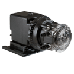
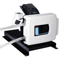
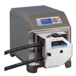
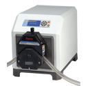
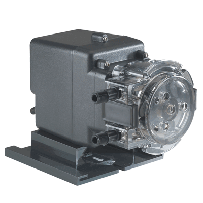
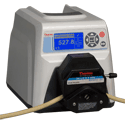

Peristaltic Pumps
Peristaltic pumps are typically used in dosing or metering applications. They can provide liquid input in very small / very specific measurements. Choose your product today to request a quote, learn more, and explore our purchasing options.

Stenner Classic 45 Single Head Adjustable Rate Pump, 1.2 - 22.0 GPD, 1/4" White Santoprene® Suction/Discharge Tube, 120V, 60Hz, 25 PSI, 26 RPM, Polycarbonate Housingper EA · Sign in for price- Stenner Classic 45 Single Head Adjustable Rate Pump, 1.7 - 35.0 GPD, 1/4" White Santoprene® Suction/Discharge Tube, 120V, 60Hz, 25 PSI, 26 RPM, Polycarbonate Housingper EA · Sign in for price
- Stenner Classic 45 Single Head Adjustable Rate Pump, 1.7 - 35.0 GPD, 3/8" White Santoprene® Suction/Discharge Tube, 120V, 60Hz, 25 PSI, 26 RPM, Polycarbonate Housingper EA · Sign in for price
- Stenner Classic 45 Single Head Adjustable Rate Pump, 2.5 - 50.0 GPD, 1/4" White Santoprene® Suction/Discharge Tube, 120V, 60Hz, 25 PSI, 26 RPM, Polycarbonate Housingper EA · Sign in for price
- Stenner Classic 45 Single Head Adjustable Rate Pump, 2.5 - 50.0 GPD, 3/8" White Santoprene® Suction/Discharge Tube, 120V, 60Hz, 25 PSI, 26 RPM, Polycarbonate Housingper EA · Sign in for price
- Stenner Classic 45 Single Head Adjustable Rate Pump, 2.5 - 50.0 GPD, 3/8" UV Black Santoprene® Suction/Discharge Tube, 120V, 60Hz, 25 PSI, 26 RPM, Polycarbonate Housingper EA · Sign in for price

Thermo Scientific B/T Series Peristaltic Metering Pumpper EA · Sign in for price
Thermo Scientific I/P Series Peristaltic Metering Pumpper EA · Sign in for price- Thermo Scientific I/P Series Peristaltic Metering Pumpper EA · Sign in for price

Thermo Scientific I/P Series Peristaltic Metering Pumpper EA · Sign in for price
Stenner Classic 85 Single Head Fixed Rate Pump, 5.0 GPD, 1/4" White Santoprene® Suction/Discharge Tube, 120V/60Hz, 100 PSI, 44 RPM, Polycarbonate Housingper EA · Sign in for price- Stenner Classic 85 Single Head Fixed Rate Pump, 17.0 GPD, 1/4" White Santoprene® Suction/Discharge Tube, 120V/60Hz, 100 PSI, 44 RPM, Polycarbonate Housingper EA · Sign in for price
- Stenner Classic 85 Single Head Fixed Rate Pump, 85.0 GPD, 1/4" White Santoprene® Suction/Discharge Tube, 120V/60Hz, 100 PSI, 44 RPM, Polycarbonate Housingper EA · Sign in for price
- Stenner Classic 85 Single Head Fixed Rate Pump, 40.0 GPD, 1/4" White Santoprene® Suction/Discharge Tube, 120V/60Hz, 100 PSI, 44 RPM, Polycarbonate Housingper EA · Sign in for price
- Stenner Classic 85 Single Head Fixed Rate Pump, 40.0 GPD, 1/4" White Santoprene® Suction/Discharge Tube, 120V/60Hz, 25 PSI, 44 RPM, Polycarbonate Housingper EA · Sign in for price
- Stenner Classic 85 Single Head Fixed Rate Pump, 60.0 GPD, 1/4" White Santoprene® Suction/Discharge Tube, 120V/60Hz, 25 PSI, 44 RPM, Polycarbonate Housingper EA · Sign in for price
- Stenner Classic 85 Single Head Fixed Rate Pump, 85.0 GPD, 1/4" White Santoprene® Suction/Discharge Tube, 120V/60Hz, 25 PSI, 44 RPM, Polycarbonate Housingper EA · Sign in for price
- Stenner Classic 85 Single Head Fixed Rate Pump, 85.0 GPD, 1/4" UV Black Santoprene® Suction/Discharge Tube, 120V/60Hz, 25 PSI, 44 RPM, Polycarbonate Housingper EA · Sign in for price
- Stenner Classic 85 Single Head Fixed Rate Pump, 85.0 GPD, 3/8" White Santoprene® Suction/Discharge Tube, 120V/60Hz, 25 PSI, 44 RPM, Polycarbonate Housingper EA · Sign in for price
- Stenner Classic 85 Single Head Fixed Rate Pump, 85.0 GPD, 3/8" UV Black Santoprene® Suction/Discharge Tube, 120V/60Hz, 25 PSI, 44 RPM, Polycarbonate Housingper EA · Sign in for price
- Stenner Classic 85 Single Head Adjustable Rate Pump, 0.3 - 5.0 GPD, 1/4" White Santoprene® Suction/Discharge Tube, 120V/60Hz, 100 PSI, 44 RPM, Polycarbonate Housingper EA · Sign in for price
- Stenner Classic 85 Single Head Adjustable Rate Pump, 0.3 - 5.0 GPD, 1/4" UV Black Santoprene® Suction/Discharge Tube, 120V/60Hz, 100 PSI, 44 RPM, Polycarbonate Housingper EA · Sign in for price
- Stenner Classic 85 Single Head Adjustable Rate Pump, 0.8 - 17.0 GPD, 1/4" White Santoprene® Suction/Discharge Tube, 120V/60Hz, 100 PSI, 44 RPM, Polycarbonate Housingper EA · Sign in for price
- Stenner Classic 85 Single Head Adjustable Rate Pump, 0.8 - 17.0 GPD, 1/4" UV Black Santoprene® Suction/Discharge Tube, 120V/60Hz, 100 PSI, 44 RPM, Polycarbonate Housingper EA · Sign in for price
- Stenner Classic 85 Single Head Adjustable Rate Pump, 0.8 - 17.0 GPD, 3/8" White Santoprene® Suction/Discharge Tube, 120V/60Hz, 100 PSI, 44 RPM, Polycarbonate Housingper EA · Sign in for price
- Stenner Classic 85 Single Head Adjustable Rate Pump, 0.8 - 17.0 GPD, 3/8" UV Black Santoprene® Suction/Discharge Tube, 120V/60Hz, 100 PSI, 44 RPM, Polycarbonate Housingper EA · Sign in for price
- Stenner Classic 85 Single Head Adjustable Rate Pump, 0.8 - 17.0 GPD, 1/4" White Santoprene® Suction/Discharge Tube, 220V/60Hz, 100 PSI, 44 RPM, Polycarbonate Housingper EA · Sign in for price
- Stenner Classic 85 Single Head Adjustable Rate Pump, 2.0 - 40.0 GPD, 1/4" White Santoprene® Suction/Discharge Tube, 120V/60Hz, 100 PSI, 44 RPM, Polycarbonate Housingper EA · Sign in for price
- Stenner Classic 85 Single Head Adjustable Rate Pump, 2.0 - 40.0 GPD, 1/4" UV Black Santoprene® Suction/Discharge Tube, 120V/60Hz, 100 PSI, 44 RPM, Polycarbonate Housingper EA · Sign in for price
- Stenner Classic 85 Single Head Adjustable Rate Pump, 2.0 - 40.0 GPD, 3/8" White Santoprene® Suction/Discharge Tube, 120V/60Hz, 100 PSI, 44 RPM, Polycarbonate Housingper EA · Sign in for price
- Stenner Classic 85 Single Head Adjustable Rate Pump, 0.8 - 17.0 GPD, 1/4" UV Black Santoprene® Suction/Discharge Tube, 120V/60Hz, 25 PSI, 44 RPM, Polycarbonate Housingper EA · Sign in for price
- Stenner Classic 85 Single Head Adjustable Rate Pump, 0.8 - 17.0 GPD, 3/8" White Santoprene® Suction/Discharge Tube, 120V/60Hz, 25 PSI, 44 RPM, Polycarbonate Housingper EA · Sign in for price
- Stenner Classic 85 Single Head Adjustable Rate Pump, 2.0 - 40.0 GPD, 1/4" White Santoprene® Suction/Discharge Tube, 120V/60Hz, 25 PSI, 44 RPM, Polycarbonate Housingper EA · Sign in for price
- Stenner Classic 85 Single Head Adjustable Rate Pump, 2.0 - 40.0 GPD, 1/4" UV Black Santoprene® Suction/Discharge Tube, 120V/60Hz, 25 PSI, 44 RPM, Polycarbonate Housingper EA · Sign in for price
- Stenner Classic 85 Single Head Adjustable Rate Pump, 3.0 - 60.0 GPD, 1/4" White Santoprene® Suction/Discharge Tube, 120V/60Hz, 25 PSI, 44 RPM, Polycarbonate Housingper EA · Sign in for price
- Stenner Classic 85 Single Head Adjustable Rate Pump, 3.0 - 60.0 GPD, 3/8" White Santoprene® Suction/Discharge Tube, 120V/60Hz, 25 PSI, 44 RPM, Polycarbonate Housingper EA · Sign in for price
- Stenner Classic 85 Single Head Adjustable Rate Pump, 4.3 - 85.0 GPD, 1/4" White Santoprene® Suction/Discharge Tube, 120V/60Hz, 25 PSI, 44 RPM, Polycarbonate Housingper EA · Sign in for price
- Stenner Classic 85 Single Head Adjustable Rate Pump, 4.3 - 85.0 GPD, 1/4" UV Black Santoprene® Suction/Discharge Tube, 120V/60Hz, 25 PSI, 44 RPM, Polycarbonate Housingper EA · Sign in for price

Thermo Scientific P/S Series Peristaltic Metering Pumpper EA · Sign in for price Blue-White Industries A-100N F Series Peristaltic Metering Pumpper EA · Sign in for price
Blue-White Industries A-100N F Series Peristaltic Metering Pumpper EA · Sign in for price